使用 MATLAB 对单目相机进行内参标定
本文介绍如何使用 MATLAB 相机标定工具箱对单目相机进行内参标定，及在标定过程中需要注意的具体事项。
打开标定工具箱
在 “应用程序” 中搜索 “camera”，点击图标打开相机标定工具箱。
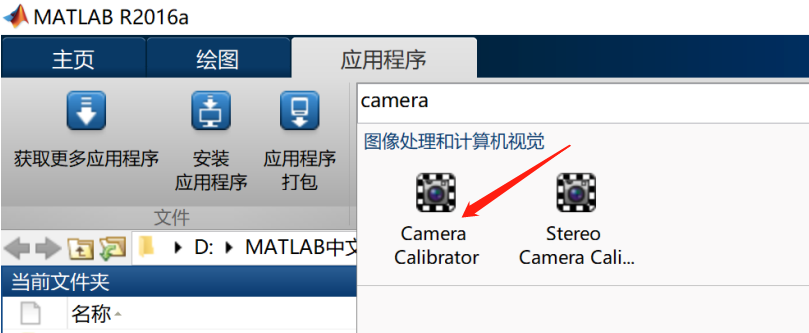
添加标定图片
点击 “Add Images” 里的 “From file”，添加提前拍摄的标定图片，也可以选择 “From camera” 直接从相机获取标定图片。
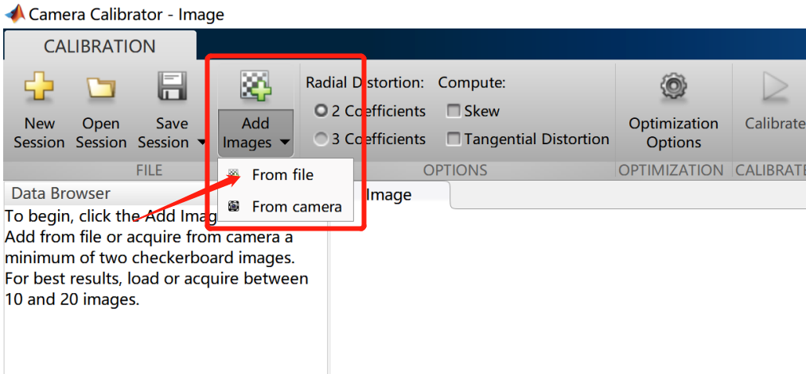
设置标定板上方格的实际边长，单位是 mm
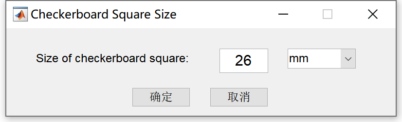
点击 “确定” 后自动开始检测所有图片里的角点，检测完成会显示总的图片数量，接受的图片数量和拒绝的图片数量，点击 “view images” 可以查看被拒绝的图片。
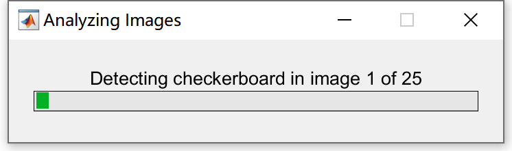
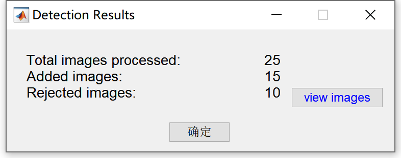
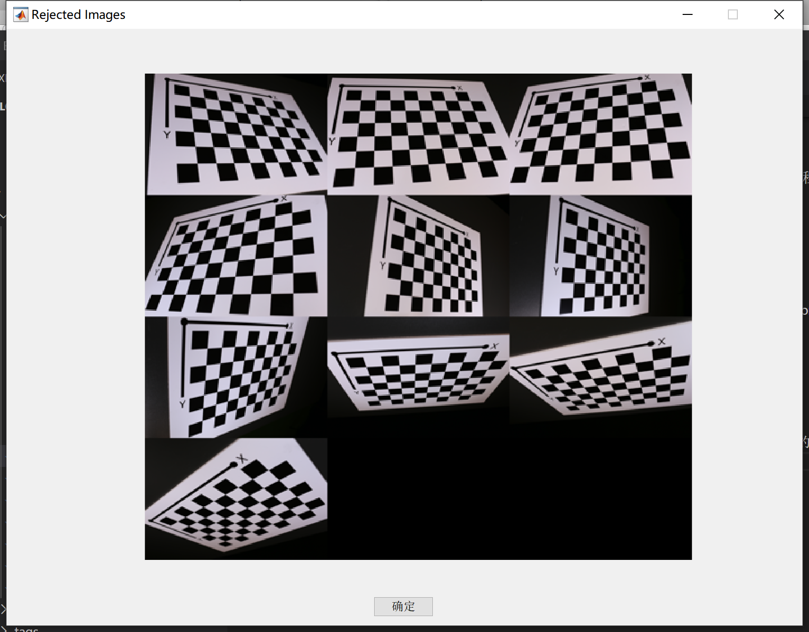
点击 “确定” 后页面左侧显示接受的图片，中间显示选中的图片，该图片中角点的检测结果，绿色圆圈表示检测到的角点，黄色方框表示检测到的棋盘格坐标原点。
标定选项设置
在窗口上面一栏的 “OPTIONS” 里选择需要标定的相机内参的阶数（2 阶或 3 阶），是否同时标定畸变系数，以及畸变的类型（Skew: 径向畸变，Tangential Distortion: 切向畸变）
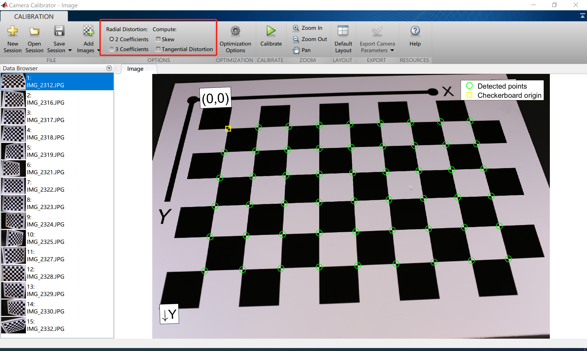
标定计算
点击 “Calibrate” 开始进行相机标定。
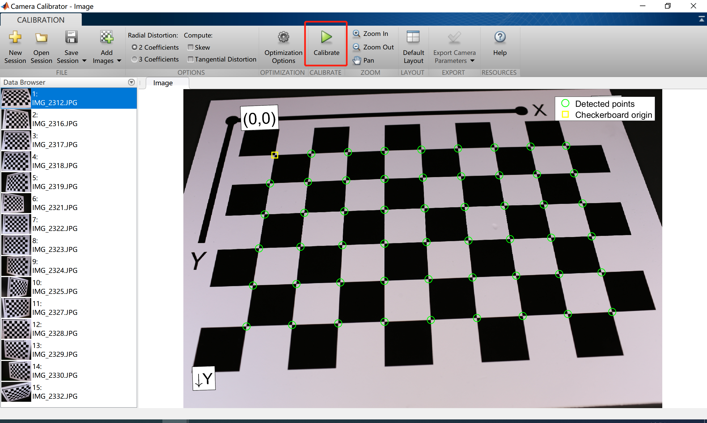
标定计算完成后界面右侧会显示各张图片的重投影误差柱状图和平均重投影误差值。
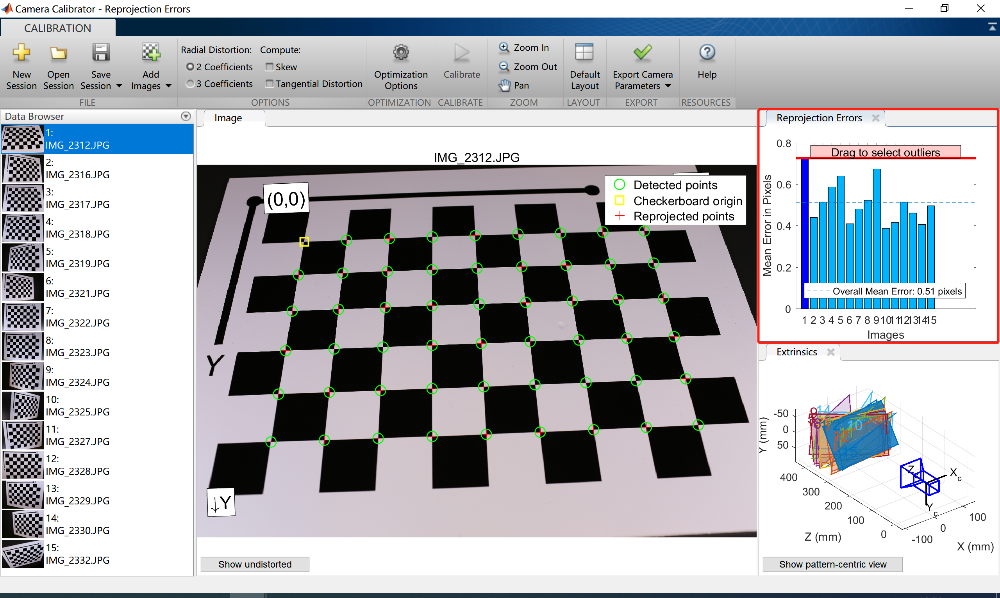
根据标定结果筛选图片提高标定精度
拖动柱状图内红色线选中重投影误差较大的图片，在界面左侧鼠标右键将它们删除，以此来保留优质标定图片重新进行内参标定，当平均重投影误差值小于 0.5 个像素时认为标定完成。
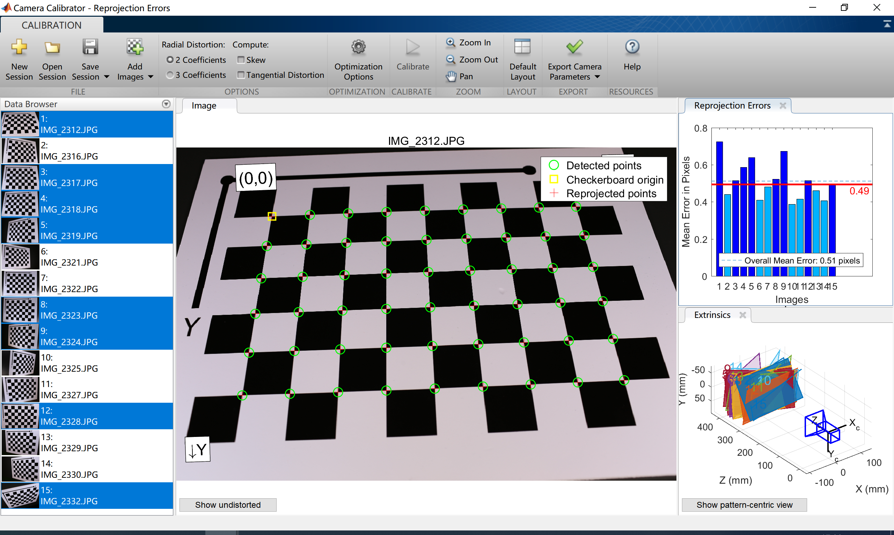
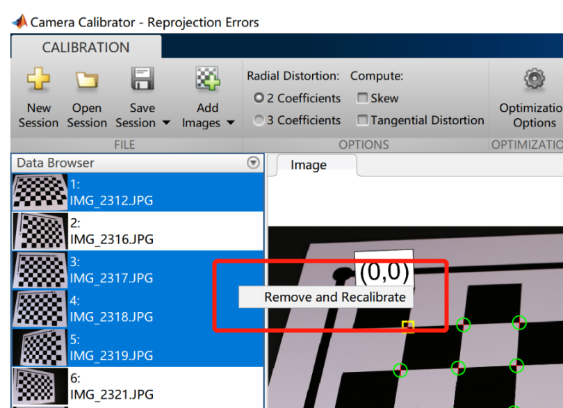
导出标定结果
点击 “Export camera parameters” 将标定结果数据导出到 matlab 工作空间中。
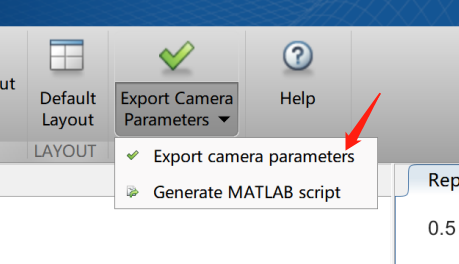
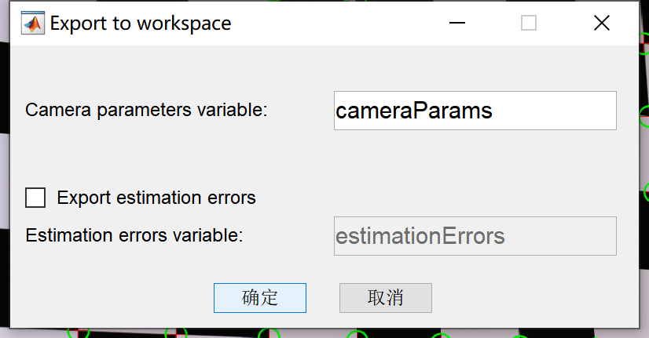
其中的 “Intrinsic Matrix” 代表相机内参矩阵 $K$
其中 $f_{x}=\alpha f$, $f_{y}=\beta f$，表示空间坐标点在成像平面上的缩放比，$c_{x}$ 和 $c_{y}$ 表示成像平面中心点到左上角在 $x$ 和 $y$ 方向上的平移量，$s$ 为坐标轴倾斜参数，理想情况下为 0。
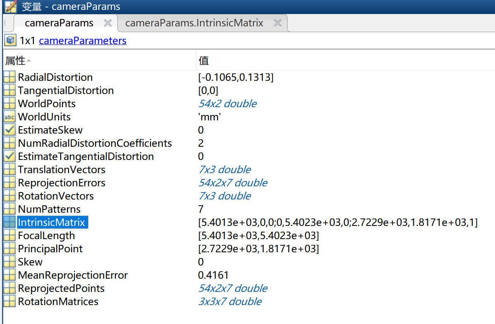
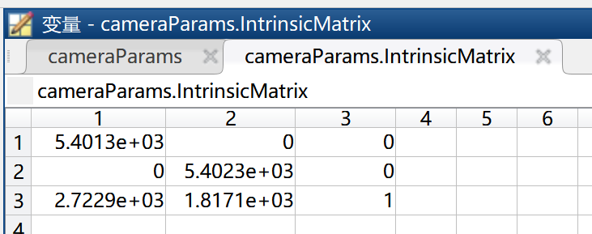
Note:
标定板准备工作
- 所标定的相机的视场（field of view, FOV）最大为 95 度
- 最少需要 3 张标定图片，10-20 张标定效果最佳
- 目前只支持使用棋盘格图片进行标定
- 标定的棋盘格横向和竖向的数量不能相同，并且满足其中一条边两个端点是黑色方格，而另一边两个端点为白色方格，以此确定棋盘格的 $x-y$ 方向
- 背景尽量保持整洁干净，不能杂乱
相机
- 拍摄时不能改变相机焦距，不要放大和缩小图像
拍摄图片
- 相机到标定板的距离设置为实际中需要检测的区域到相机的距离最佳
- 标定板相对相机平面倾斜角不超过 45 度
- 不要裁剪图片
- 不要使用自动变焦和图像缩放
- 从不同的角度拍摄照片
- 标定板在图片中至少占据 $20%$ 区域
- 为了更好的得到畸变系数，不同的图片中标定板尽量占据图片的不同位置（中部和接近图片各个边缘区域）
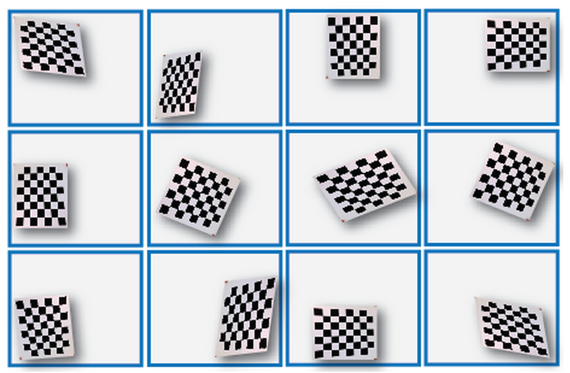
标定
- 可以设置内参初值
其他
MATLAB 中相机标定计算的过程分为两步：
- 首先假设不存在畸变，进行内参和外参的标定
- 将上一步的结果作为初值，使用 Levenberg–Marquardt 算法同时优化内参，外参和畸变系数